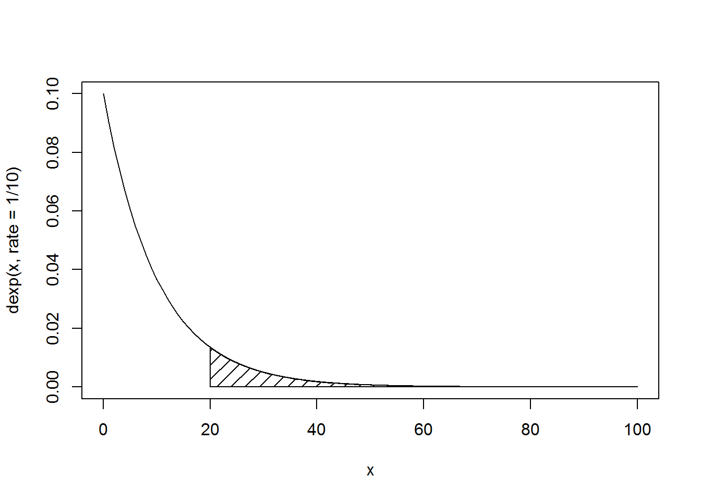

3 Lab - Continuous Probability
You can download the original R notebook document HERE
3.1 Question 1
The number of points scored by each team in a tournament is normally distributed, with mean μ = 32 and standard deviation σ = 7. What is the probability of:
3.1.1 1a
A team scoring 20 points or fewer? Plot the density function and shade the area. (5 pt.)
pnorm(20,mean = 32,sd = 7) ## [1] 0.04323813curve(dnorm(x,32,7),from = 10,to = 54)
cord.x <- c(10,seq(10,20,0.01),20)
cord.y <- c(0,dnorm(seq(10,20,0.01),mean = 32,sd = 7),0)
polygon(cord.x,cord.y,density = 10)3.1.2 1b
A team scoring more than 35 points? Plot the density function and shade the area. (5 pt.)
pnorm(35,mean = 32,sd = 7,lower.tail = FALSE)## [1] 0.3341176curve(dnorm(x,32,7),from = 10,to = 54)
cord.x <- c(35,seq(35,54,0.01),54)
cord.y <- c(0,dnorm(seq(35,54,0.01),mean = 32,sd = 7),0)
polygon(cord.x,cord.y,density = 10)3.1.3 1c
A team scoring between 20 and 40 points? Plot the density function and shade the area. (5 pt.)
pnorm(40,mean = 32,sd = 7) - pnorm(20,mean = 32,sd = 7)## [1] 0.8302129diff(pnorm(c(20,40),mean = 32,sd = 7))## [1] 0.8302129curve(dnorm(x,32,7),from = 10,to = 54)
cord.x <- c(20,seq(20,40,0.01),40)
cord.y <- c(0,dnorm(seq(20,40,0.01),mean = 32,sd = 7),0)
polygon(cord.x,cord.y,density = 10)3.2 Question 2
The number of comments per post on a social media site is exponentially distributed, with the average post receiving ten comments. What percentage of posts get:
3.2.1 2a
Fewer than three comments? Plot the density function and shade the area. (5 pt.)
pexp(3,rate = 1/10)## [1] 0.2591818curve(dexp(x,rate = 1/10),from = 0,to = 100)
cord.x <- c(0,seq(0,3,0.01),3)
cord.y <- c(0,dexp(seq(0,3,0.01),rate = 1/10),0)
polygon(cord.x,cord.y,density = 10)3.2.2 2b
More than 20 comments? Plot the density function and shade the area. (5 pt.)
pexp(20,rate = 1/10,lower.tail = FALSE)## [1] 0.1353353curve(dexp(x,rate = 1/10),from = 0,to = 100)
cord.x <- c(20,seq(20,100,0.01),100)
cord.y <- c(0,dexp(seq(20,100,0.01),rate = 1/10),0)
polygon(cord.x,cord.y,density = 10)
3.2.3 2c
Between five and ten comments? Plot the density function and shade the area. (5 pt.)
diff(pexp(c(5,10),rate = 1/10))## [1] 0.2386512curve(dexp(x,rate = 1/10),from = 0,to = 100)
cord.x <- c(5,seq(5,10,0.01),10)
cord.y <- c(0,dexp(seq(5,10,0.01),rate = 1/10),0)
polygon(cord.x,cord.y,density = 10)3.3 Question 3
Basic raster creation and calculation:
3.3.1 3a
Create a first raster (30 rows × 30 columns) and assign values to the raster based on random values from a uniform distribution. Plot the raster and the histogram. (5 pt.)
library(raster)
ras1 <- raster(nrows=30,ncols=30,xmn=0,xmx=30,ymn=0,ymx=30)
ras1[] = runif(ncell(ras1))
plot(ras1)hist(ras1)3.3.2 3b
Create a second raster (30 rows × 30 columns) and assign values to the raster based on random values from a normal distribution. Plot the raster and the histogram. (5 pt.)
ras2 <- raster(nrows=30,ncols=30,xmn=0,xmx=30,ymn=0,ymx=30)
ras2[] = rnorm(ncell(ras2))
plot(ras2)
hist(ras2)3.3.3 3c
Create a third raster (30 rows × 30 columns) and assign values to the raster based on cell-by-cell addition of the first raster and the second raster. Plot the raster and the histogram. (5 pt.)
ras3 <- ras1 + ras2
plot(ras3)hist(ras3)3.3.4 3d
Calculate the mean value of the third raster. Reclassify the third raster into a binary image: 1 (cell value > mean value) and 0 (cell value <= mean value). Save the reclassified image to your working directory as a TIFF image. (5 pt.)
mean(ras3)## class : RasterLayer
## dimensions : 30, 30, 900 (nrow, ncol, ncell)
## resolution : 1, 1 (x, y)
## extent : 0, 30, 0, 30 (xmin, xmax, ymin, ymax)
## coord. ref. : +proj=longlat +datum=WGS84 +ellps=WGS84 +towgs84=0,0,0
## data source : in memory
## names : layer
## values : -2.690102, 3.762328 (min, max)m <- cellStats(ras3,mean)
ras3[ras3 < m] <- 0
ras3[ras3 >= m] <- 1
plot(ras3)
hist(ras3)writeRaster(ras3,filename = "output/test.tif",overwrite=TRUE)
r <- raster("output/test.tif")
plot(r)hist(r)